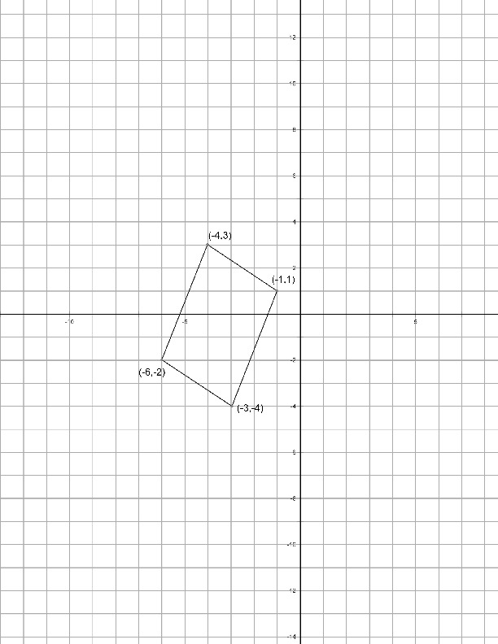

{% raw %}

<article>
<h1>Lesson 4: Coordinate Geometry</h1>
  <section class="development">

    <h2>Introduction</h2>

    <p>In the previous lesson, you learned about parallel and
    perpendicular lines. A pair of lines that are parallel never
    meet; other pairs of lines that you can draw on paper
    eventually will. You also learned that you can tell if lines
    are parallel by checking their slopes.

    The lines below aren’t on a coordinate system, so you won’t be
    able to check their slopes. However, to prove that they are not
    parallel, you could extend them to a point where they meet.</p>

    <figure class="fig-md">
      
      <cite>Image from <a href="http://www.davidpbrown.co.uk/optical-illusions/parallel-lines.html">http://www.davidpbrown.co.uk/optical-illusions/parallel-lines.html</a>. </cite>
    </figure>

    <p>Place an extra piece of paper next to the picture above.
    Then, using a straightedge, pick two non-parallel lines and
    extend them until they finally meet. How far away from the edge
    of the picture did they meet?</p>

    <h2>Development</h2>

    <p>Will the real square please stand up? One of these figures
    is a square. The other is an impostor.</p>

    <figure class="fig-md">
      
    </figure>
    <figure class="fig-md">
      
    </figure>

    <div class="problem" data-problem-number="1">
      <p>Find a way to determine which one is the square. Keep in
      mind that measuring with a ruler will not be accurate
      enough.</p>
    </div>

    <p>Here’s another figure which really is a square:</p>

    <figure>
      
    </figure>

    <p>Or is it? As you have seen, it can be hard to tell.</p>

    <div class="problem" data-problem-number="2">
      <p>What would you have to check to $prove$ that this is
      indeed a square? Do so.</p>
    </div>

    <div class="problem" data-problem-number="3">
      <p>In the previous problem, it wasn’t enough just to show
      that all the sides were the same length. Can you draw some
      four-sided figures, other than squares, where the sides are
      all the same length? Do you remember what such figures are
      called?</p>
    </div>

    <div class="problem" data-problem-number="4">
      <p>Similarly, it wasn’t enough to show that all of the angles
      were 90 degrees. Draw some four-sided figures other than
      squares with four 90-degree angles. What are they called?</p>
    </div>

    <p>Appearances can be deceiving. When confronted with a
    diagram, you should never assume what is not explicitly stated.
    You can’t be sure that you really have parallel lines, segments
    of the same length, etc. That is, you can’t be sure unless you
    prove it!</p>

    <p>For example, a square is defined as a quadrilateral with
    four equal sides and four 90-degree angles. So to prove that
    something is a square, you need to: 1) Check that it has four
    sides, 2) Show that the sides have the same length (using the
    distance formula, for example), and 3) Show that all angles are
    90 degrees (by comparing slopes, for example).</p>

    <p>To prove that something is not a square, you only need to
    show that it fails on at least one of the counts above. So, for
    example, if you used the distance formula to show that two
    sides of a figure were of two different lengths, you would have
    already proved that it is not a square — no need to check the
    other criteria.</p>

    <div class="problem" data-problem-number="5">
      <p>Use the definition of a square to do the following:</p>

      <p class="problem-part" data-part="a">. Prove that the four-sided shape
      with vertices on $\left( {3,0} \right)$, $\left( {7,3}
      \right)$, $\left( {4,7} \right)$, and $\left( {0,4}
      \right)$ is a square.</p>

      <p class="problem-part" data-part="b">. Make up your own square, then
      construct an argument to prove to someone else that it is a
      square.</p>
    </div>

    <div class="problem" data-problem-number="6">
      <p>How would you define a rectangle?</p>
    </div>

    <div class="problem" data-problem-number="7">
      <p>Here are the supposed corners of a rectangle: $\left( { -
      32,52} \right)$, $\left( {74,138} \right)$, $\left( {117,85} \right)$, 
      $\left( {11,-1} \right)$. Is it really a rectangle?
      Prove it.</p>
    </div>

    <div class="problem" data-problem-number="8">
      <p>Here is a picture of the rectangle from problem 7 with the
      diagonals drawn in. Do they look the same length to you?
      Either prove that they are the same length, or show that they
      are not.</p>
      <figure>
        
      </figure>
    </div>


    <div class="problem" data-problem-number="9">
      <p>Prove that the line segment drawn from $\left( { - 10,28}
      \right)$ to \[(4,4)\] has the same midpoint as the line
      segment drawn from to $\left( {1,36} \right)$.</p>
    </div>

    <div class="problem" data-problem-number="10">
      <p>In middle school, you learned about parallelograms,
      rhombuses, and trapezoids. Come up with a definition for
      each.</p>
    </div>

    <h2>Practice</h2>

    <p>In the following set of questions, you should either PROVE
    that the shape is what you think it is or give mathematical
    evidence to show that it is not. It may help you to start by
    drawing a diagram.</p>

    <div class="problem" data-problem-number="11">
      <p>Are $\left( {10,2} \right)$, $\left( {12,42} \right)$,
      $\left( { - 28,44} \right)$, and the corners of a
      square?</p>
    </div>

    <div class="problem" data-problem-number="12">
      <p>In the figure below, is ABCD a rectangle?</p>
    </div>

    <figure>
      
    </figure>

    <div class="problem" data-problem-number="13">
      <p>In the figure below, is ABCD a square?</p>
    </div>

    <figure>
      
    </figure>

    <div class="problem" data-problem-number="14">
      <p>In the figure below, is CDE isosceles?</p>
    </div>

    <figure>
      
    </figure>

    <div class="problem" data-problem-number="15">
      <p>Are , $\left( {14,12} \right)$, $\left( {18,20} \right)$, and $\left( {1,14} \right)$ the corners of a
      parallelogram?</p>
    </div>

    <div class="problem" data-problem-number="16">
      <p>Do some calculations to prove what, in fact, each of the
      following shapes is. Make sure you’ve shown the shape
      satisfies each part of the appropriate definition in Problem
      10.</p>

      <p class="problem-part" data-part="a">.</p>
    </div>

    <figure>
      
    </figure>

    <p class="problem-part" data-part="b">.</p>

    <figure>
      
    </figure>

    <p class="problem-part" data-part="c">.</p>

    <figure>
      
    </figure>

    <p class="problem-part" data-part="d">.</p>

    <figure>
      
    </figure>

    <div class="problem" data-problem-number="17">
      <p class="problem-part" data-part="a">.</p>
    </div>

    <figure>
      
    </figure>

    <p class="problem-part" data-part="b">.</p>

    <figure>
      
    </figure>

    <h2>Going Further</h2>

    <p>Could we prove that the diagonals of $any$ rectangle are the
    same length as each other? One thing we could do would be to
    try another example. Let’s take another rectangle of a
    different size, say the one defined by $\left( {3,4} \right)$,
    $\left( {9,7} \right)$, $\left( {8,9} \right)$, and $\left(
    {2,6} \right)$. Using the distance formula, we find that the
    lengths of the diagonals are \[\sqrt {{{(9 - 2)}^2} + {{(7 -
    6)}^2}} \] and \[\sqrt {{{(8 - 3)}^2} + {{(9 - 4)}^2}} \] ,
    which both simplify to \[\sqrt {50} \] .</p>

    <p>Are we better off than we were before? Now we know that our
    conjecture is true for two rectangles, but that still leaves
    lots of other rectangles we’re not sure about. Another strategy
    might be to draw a rectangle that could represent any
    rectangle. To make life easiest, let’s position it so that its
    bottom edge lines up with the $x$-axis, with its left side
    touching the origin.</p>

    <figure>
      
    </figure>

    <p>We don’t want to say how long the sides are, because then
    we’d have a specific rectangle. So let’s just call the lengths
    a and b.</p>

    <p>Notice that the coordinates of the point in the rectangle’s
    upper right corner have been left blank. We could be lazy and
    fill them in with two more letters: $\left( {c,d} \right)$.
    But there is a way to do it in terms of the other letters that
    are already in the diagram.</p>

    <div class="problem" data-problem-number="18">
      <p>Read the previous paragraph (if you haven’t already) and
      find a better way to name the coordinates of the point in the
      upper right corner.</p>
    </div>

    <div class="problem" data-problem-number="19">
      <p>Now use the distance formula to find the length of each
      diagonal of this rectangle. Note that your answers will have
      letters in them that won’t go away! How do your answers
      compare? What did you just prove?</p>
    </div>

    <p>Using symbols to represent numbers or coordinates that could
    take on any values is another example of representing
    symbolically. In addition to allowing us to do the proof,
    representing the coordinates symbolically has a side benefit
    here: any calculations we do using these symbols will apply to
    any rectangle we could possibly come across.</p>

    <div class="problem" data-problem-number="20">
      <p>Use the formula you found in Problem 18 to find the
      lengths of the two diagonals of a 17x42 rectangle. Does your
      formula work?</p>
    </div>

    <div class="problem" data-problem-number="21">
      <p>Socrates read your work in Problem 18, and complained that
      you’ve really only shown that the diagonals are congruent for
      rectangles that have a corner at $\left( {0,0} \right)$ and
      are sitting flat on the $x$-axis. Is he right? Do you have a
      response?</p>
    </div>

    <div class="problem" data-problem-number="22">
      <p>Draw a square that can represent any square, placing it on
      a grid and labeling the coordinates of its important points
      with letters (as you did in Problem 17). You may want to make
      one of its corners the origin. Now calculate the length of
      the diagonals of your square.</p>
    </div>

    <div class="problem" data-problem-number="23">
      <p>Draw an isosceles triangle than can represent any
      isosceles triangle.</p>

      <p class="problem-part" data-part="a">. Find two different sensible ways to
      place your triangle. Label the coordinates using a minimum of
      letters, as in Problem 17.</p>

      <p class="problem-part" data-part="b">. Find the coordinates of the
      midpoint of each of the same-length sides. Now connect each
      midpoint with the vertex opposite it, as below. Are these two
      line segments the same length? Prove it for any isosceles
      triangle.</p>
    </div>

    <figure>
      
    </figure>

    <div class="problem" data-problem-number="24">
      <p>Part b of the previous problem is a proof of a theorem.
      State the theorem you proved.</p>
    </div>

    <div class="problem" data-problem-number="25">
      <p>Now rotate your isosceles triangle of Problem 22 so that
      the base side (the side that is a different length from the
      other two sides) is vertical. Does your proof apply to
      triangles like these, as well?</p>
    </div>

    <p>You’ve now had a bit of practice doing proofs that aren’t
    just about specific diagrams. For example, you proved that the
    diagonals in ANY rectangle are the same length.</p>

    <p>Of course, some statements you’ll investigate in geometry
    may turn out to be false. When you’re asked to prove something,
    it’s a good idea to figure out if it’s worth it to even begin
    the proof — maybe the statement wasn’t true to begin with.</p>

    <div class="problem" data-problem-number="26">
      <p>Draw some pictures to decide if it is worth it to prove
      the statement “the diagonals of a parallelogram are the same
      length.”</p>
    </div>

    <p>If you can draw a picture that shows a statement must be
    false, that picture is called a counterexample.</p>

    <h2>Practice</h2>

    <div class="problem" data-problem-number="27">
      <p>Draw a parallelogram that can represent any parallelogram,
      placing it on a grid and labeling its coordinates with
      letters (as in Problem 17).</p>
    </div>

    <div class="problem" data-problem-number="28">
      <p>Draw an equilateral triangle that can represent any
      equilateral triangle, labeling the important points as
      always.</p>
    </div>

    <div class="problem" data-problem-number="29">
      <p>In the previous question, you probably had to use two
      different letters to label the points. Now find a way to get
      it down to one letter.</p>
    </div>

    <div class="problem" data-problem-number="30">
      <p>According to your definitions,</p>

      <p class="problem-part" data-part="a">. Is a square a type of
      rectangle?</p>

      <p class="problem-part" data-part="b">. Is an equilateral triangle a type
      of isosceles triangle?</p>

      <p class="problem-part" data-part="c">. Is a rhombus a type of
      parallelogram?</p>

      <p class="problem-part" data-part="d">. Is a rectangle a type of
      square?</p>

      <p class="problem-part" data-part="e">. Is a parallelogram a type of
      trapezoid?</p>
    </div>

    <div class="problem" data-problem-number="31">
      <p>For a rectangular box with width 4, length 5, and height
      6,</p>

      <p class="problem-part" data-part="a">. What is the exact (i.e. no
      rounding) length of the diagonal of the base?</p>

      <p class="problem-part" data-part="b">. What is the exact length of the
      diagonal that connects
      opposite corners of the box?</p>
    </div>

    <p>A kite is a quadrilateral that has two pairs of congruent,
    adjacent sides, as
    pictured below.</p>

    <figure>
      

    </figure>

    <div class="problem" data-problem-number="32">
      <p>Carefully explain why most parallelograms do $not$ fit the
      definition of a kite.</p>
    </div>

    <div class="problem" data-problem-number="33">
      <p>Is a rhombus a type of kite?</p>
    </div>
  </section>

  <section>
    <p>Whenever you test a statement in geometry to see if it’s
    true, you should visualize by drawing several, varied pictures
    of the shape you’re investigating. If you can’t find a
    counterexample and the statement appears to be true, it’s time
    to look for a proof. But it is never good enough to prove
    something by doing the calculations on a specific shape you
    drew. You’ll have to represent the coordinates symbolically by
    using letters that can stand for any number. That way, you’ll
    be sure your proof works for all shapes. Practice using both of
    these strategies in the five problems that follow.</p>

    <div class="problem" data-problem-number="34">
      <p>Do the non-parallel sides of a trapezoid have to be
      congruent? Either prove it, or find a counterexample.</p>
    </div>

    <div class="problem" data-problem-number="35">
      <p>Prove that in any triangle the line segment joining the
      midpoints of any two sides is parallel to the third side.</p>
    </div>

    <div class="problem" data-problem-number="36">
      <p>Prove that in any triangle the length of the line segment
      joining the midpoints of any two sides is equal to half the
      length of the third side.</p>
    </div>

    <div class="problem" data-problem-number="37">
      <p>Is it the case that the line segments
      joining the midpoints of successive sides of a rectangle form
      a rhombus? Prove it
      or find a counterexample.</p>
    </div>

    <div class="problem" data-problem-number="38">
      <p>$FAN$ is a right triangle with the right angle at A. A
      line segment is drawn from A to the midpoint Y of \[\overline
      {FN} \] . Is the conjecture that \[AY = FY\] true? Justify
      your answer. (Choose your coordinates carefully.)</p>
    </div>

    <p>Recall that a median of a triangle is a line drawn from the
    vertex to the midpoint of the opposite side.</p>

    <div class="problem" data-problem-number="39">
      <p>$A\left( { - 3,13} \right)$, \[B\left( {9,1} \right)\]
      &nbsp;and \[C\left( { - 9,1} \right)\] &nbsp;are
      the vertices of a triangle.&nbsp;&nbsp;&nbsp;</p>

      <p class="problem-part" data-part="a">. Draw the triangle and its medians
      \[\overline {AD} \] , \[\overline {BE} \] and \[\overline
      {CF} \] on graph paper.</p>

      <p class="problem-part" data-part="b">. Find the equations of the three
      medians.</p>

      <p class="problem-part" data-part="c">. It appears that the three medians
      all cross at the point \[\left( { - 1,5} \right)\] . Is
      this
      really true, or are they just close?</p>
    </div>

    <div class="problem" data-problem-number="40">
      <p>What theorem does Problem 38 suggest about the medians of
      any triangle?</p>
    </div>

    <div class="problem" data-problem-number="41">
      <p>A $lattice point$ is a point where both
      coordinates are integers, like (-7,2), but
      not like (3,5.5). Is it possible to form a square whose area
      is 72 by connecting
      four lattice points? How about if the sides of the square
      cannot be horizontal or vertical?</p>
    </div>

    <div class="problem" data-problem-number="42">
      <p>Let $a$ be any number. Is the quadrilateral with vertices
      $(a,7a),\;(6a,5a),\;(2a, - 7a)$, and $( - 4a, - 5a)$ sometimes, always, or never a rectangle, depending on the
      value of $a$?</p>
    </div>

    <div class="problem" data-problem-number="43">
      <p>Don’t use a calculator for this problem.</p>

      <p class="problem-part" data-part="a">. Subtract</p>

      <p class="problem-part" data-part="b">. Factor \[{x^2} - 3x - 54\]</p>

      <p class="problem-part" data-part="c">. Solve for $x$: \[\frac{1}{{x + 2}}
      = 4\]</p>

      <p class="problem-part" data-part="d">. Are the following expressions
      “negative reciprocals”? vs. \[\frac{2}{{3x}}\]</p>

      <p class="problem-part" data-part="e">. Find all values of $x$ where \[ - x
      = |x|\] .</p>
    </div>

    <div class="problem" data-problem-number="44">
      <p>Is it possible for a line to go through no lattice points?
      Exactly one lattice point? Exactly two lattice points?</p>
    </div>

    <div class="problem" data-problem-number="45">
      <p>Can both the length and width of a
      rectangle be irrational and yet the length of its diagonal be
      an integer?</p>
    </div>

    <p>It’s one thing to prove something that someone else asks you
    to. But it is often more fun (and what mathematicians actually
    do) to prove something you thought of yourself. When you come
    up with a statement you think is true, though you don’t know
    for sure, that’s called a conjecture. As always, visualizing
    remains of the utmost importance when coming up with
    conjectures.</p>

    <div class="problem" data-problem-number="46">
      <p>For what kinds of quadrilaterals do the diagonals cut each
      other exactly in half? Consider squares, rectangles,
      rhombuses, parallelograms, kites, and trapezoids. Choose one
      shape for which this is true and write a proof.</p>
    </div>

    <div class="problem" data-problem-number="47">
      <p>For what kinds of quadrilaterals are the diagonals
      congruent? Consider rhombuses, parallelograms, kites, and
      trapezoids (since you’ve already considered squares and
      rectangles). Choose one shape for which this is true and
      write a proof.</p>
    </div>

    <div class="problem" data-problem-number="48">
      <p>For what kinds of quadrilaterals are the diagonals
      perpendicular to each other?</p>
    </div>

    <div class="problem" data-problem-number="49">
      <p>On a sheet of graph paper use a straightedge to draw any
      quadrilateral — the uglier the better. Now, as accurately as
      you can, find the midpoint of each of the sides and connect
      those midpoints in order with line segments.</p>

      <p class="problem-part" data-part="a">. What appears to be true about the
      new quadrilateral you have drawn?</p>

      <p class="problem-part" data-part="b">. Have a conversation with your group
      about the most sensible way to label the coordinates of a
      quadrilateral that can represent any quadrilateral. Choose
      wisely, because soon you’re going to…</p>

      <p class="problem-part" data-part="c">. …prove your conjecture in part
      a.</p>
    </div>

    <div class="problem" data-problem-number="50">
      <p>$\left( {0,0} \right)$, $\left( {1,4} \right)$, $\left(
      {3,b} \right)$, and $\left( {c,d} \right)$ are the four
      vertices of a rhombus. Find values for b, c, and d. Then find
      at least one other set of values for b, c, and d that work
      (draw a picture).</p>
    </div>

    <div class="problem" data-problem-number="51">
      <p>Here is a circle, with a line drawn tangent to it — the
      line hits the circle in exactly one place. The radius of the
      circle is also shown. What angle do the tangent and radius
      appear to form? Prove that they do indeed form this
      angle.</p>
    </div>

    <figure>
      
    </figure>

    <div class="problem" data-problem-number="52">
      <p>Two vertices of triangle $ABC$ are located at \[A\left(
      {2,7} \right)\] and and the area of the triangle is 8 square
      units. Write an equation that describes the position of the
      point C.</p>
    </div>

    <div class="problem" data-problem-number="53">
      <p>There is something funny about the pair of pictures on the
      next page.</p>

      <p class="problem-part" data-part="a">. Calculate the area of each piece
      making up the two shapes below. Do the pieces stay consistent
      in size from the first picture to the second?</p>

      <p class="problem-part" data-part="b">. Add up the areas of the four pieces
      making up the shape at the top. This should be the area of
      the top shape. Then add up the areas of the four pieces
      making up the shape at the bottom. What does this show about
      the areas of the top and bottom shapes?</p>

      <p class="problem-part" data-part="c">. Take another look at the top and
      bottom shapes. Does it make sense that they would have the
      same area?</p>

      <p class="problem-part" data-part="d">. Tinker! There’s more you can
      calculate in this picture besides just the areas of the
      various shapes. Get more data and see if you can use it to
      explain this optical illusion!</p>
    </div>
  </section>

  <section>
    <h2>Exploring
    in
    Depth</h2>
  </section>

  <figure class="fig-md">
    
  </figure>

  <section>
    <figure>
      (image from <a href="http://www.simeonmagic.com/triangle/triangle1.htm">$http://www.simeonmagic.com/triangle/triangle1.htm$</a>)
    </figure>
  </section>
</article>

{% endraw %}
